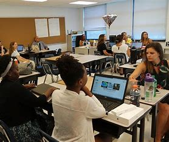
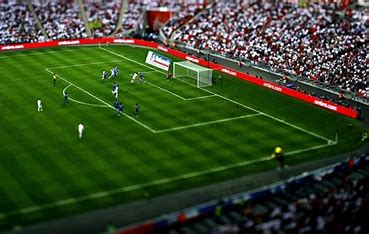
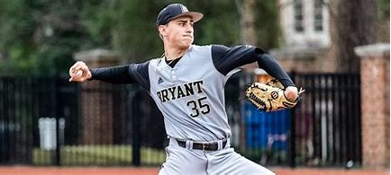
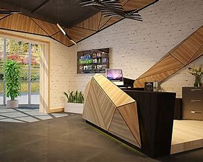

Video provides a powerful way to help you prove your point. When you click Online Video, you can paste in the embed code for the video you want to add. You can also type a keyword to search online for the video that best fits your document.
To make your document look professionally produced, Word provides header, footer, cover page, and text box designs that complement each other. For example, you can add a matching cover page, header, and sidebar.
Sunrise School is a place where students grow into future leaders. We emphasize holistic development through academics, sports, and moral values. With top-tier faculty and facilities, we make sure each student is prepared to succeed in life.
Our vision is to create a nurturing environment where every learner can achieve academic excellence, develop life skills, and become a responsible citizen of the world.
maxamad
jaamac
gureey
nuur
nuur
nuur
xagee joogtaa
waxaan jooga baladxawo
raashin
bariis
sonkor
baasto
bagaash
kabo
nacnac
jijimo
qudaar
moos
cabe
kaaroto
About Us

Founded in 2001, Sunrise School has been a pillar of quality education in the region. Our curriculum balances theory and practice, with extracurriculars ranging from robotics to literature clubs.
We believe in continuous growth—for both students and teachers. Regular training, seminars, and workshops keep our staff up-to-date with the latest educational trends.
Founded in 2001, Sunrise School has been a pillar of quality education in the region. Our curriculum balances theory and practice, with extracurriculars ranging from robotics to literature clubs.
We believe in continuous growth—for both students and teachers. Regular training, seminars, and workshops keep our staff up-to-date with the latest educational trends.
Admissions
We welcome students from diverse backgrounds. Our admission process is simple, inclusive, and based on merit and potential.
Collect application form online or from the admin office.
Take an entrance assessment (for Grades 2 and above).
Attend parent-student interview session.
sports


Founded in 2001, Sunrise School has been a pillar of quality education in the region. Our curriculum balances theory and practice, with extracurriculars ranging from robotics to literature clubs.
Video provides a powerful way to help you prove your point. When you click Online Video, you can paste in the embed code for the video you want to add. You can also type a keyword to search online for the video that best fits your document.
To make your document look professionally produced, Word provides header, footer, cover page, and text box designs that complement each other. For example, you can add a matching cover page, header, and sidebar. Click Insert and then choose the elements you want from the different galleries.
Themes and styles also help keep your document coordinated. When you click Design and choose a new Theme, the pictures, charts, and SmartArt graphics change to match your new theme. When you apply styles, your headings change to match the new theme.
We believe in continuous growth—for both students and teachers. Regular training, seminars, and workshops keep our staff up-to-date with the latest educational trends.
Contact Us

Email: saidsilva2021@gmail.com
Phone: +252 619028714
Address: Sixth Section, Baledhawo, Somalia
Follow us on social media for updates and school events!